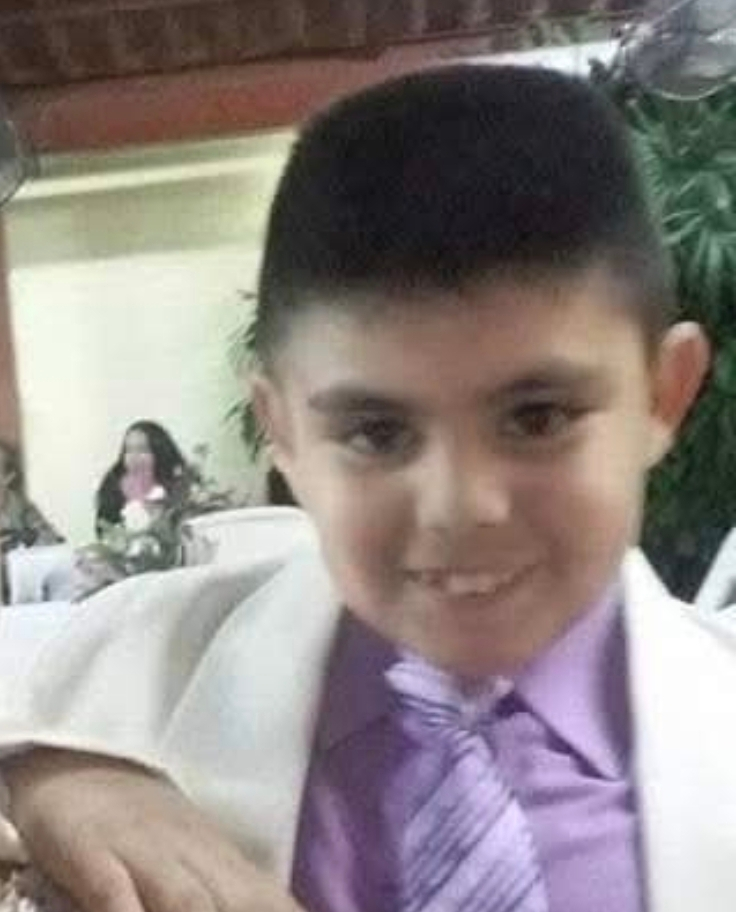

en esta biografia me conoceras un pocoquito mas

Marcos Fernando Montes Galindo nació en Los Mochis, Sinaloa, y se crió entre el calorón del valle, la buena comida y todas las tradiciones del norte.
Ahorita va en quinto semestre de prepa y trae todo el impulso con el rollo de las artes visuales, agarrándole el gusto a la escultura y haciendo sus pininos con materiales como madera, cerámica y piedra..
Le mete mucho su sello personal a lo que hace, inspirándose en la gente de la región y en la cultura Yoreme-Mayo para darle identidad a sus proyectos. Aunque todavía le queda un estirón para salir de la prepa, ya se ha presentado en varias expo locales y escolares en Ahome, demostrando que en la ciudad de las palmeras hay talento de sobra y muchas ganas de salir adelante.
| Año | Suceso |
|---|---|
| 2009 | Nacimiento. |
| 2019 | empezo en las arte. |
| 2024 | termino la secundaria. |
| 2026 | creacion de la biografia. |
instagram: insta_de_marcos